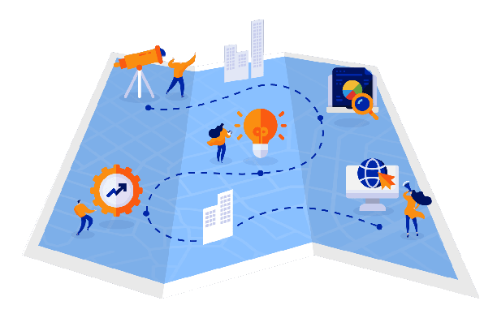

Welcome to the Data Structure and Algorithm Roadmap! This roadmap is designed to help you navigate the world of data structures and algorithms, which are essential topics in computer science and software development.
Having a strong foundation in data structures and algorithms is crucial for writing efficient and optimized code, solving complex problems, and excelling in technical interviews.
In this roadmap, we will explore a wide range of data structures and algorithms, starting from the basics and progressing to more advanced concepts. Each section provides an overview, key concepts, and suggested learning resources to help you on your learning journey.
There are so many websites to learn data structures topics. Here i give a small introduction of all the topics.
you got the all the main topics here and then learn it. Practice the problems related to the topic in Leetcode, Geeksforgeeks etc.
Do Practice, Practice and Practice more.

Firstly, select a language of your choice, be it Java, C, C++, Python, or any other language of your choice.
Before learning how to code in that language you should learn about the building pieces of the language: the basic syntax, the data types, variables, operators, conditional statements, loops, functions, etc.
The primary motive to use DSA is to solve a problem effectively and efficiently.Complexity is of two types:
Time Complexity: Time complexity is used to measure the amount of time required to execute the code.
Space Complexity: Space complexity means the amount of space required to execute successfully the functionalities of the code.
You will also come across the term Auxiliary Space very commonly in DSA, which refers to the extra space used in the program other than the input data structure.
Array
String
Linked List
Stack
Queue
Heap
Hash
Tree Data Structures
Graph Data Structure
Searching Algorithm
Sorting Algorithm
Divide and Conquer Algorithm
Greedy Mehtodology
Recursion
Backtracking Algorithm
Dynamic Programming
Pattern Searching